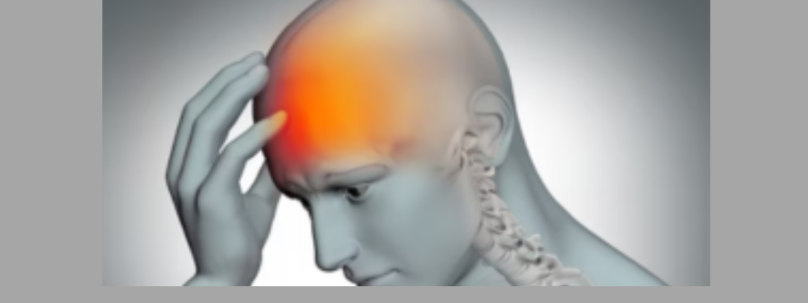
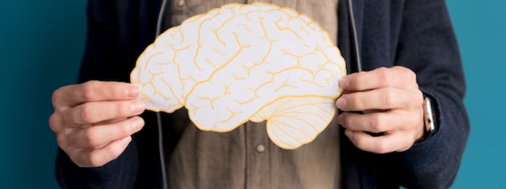

In the ever-evolving landscape of medical science, technological innovations continue to redefine the boundaries of surgical procedures. One such groundbreaking development is the advent of endoscopic spine surgery, a minimally invasive technique that has revolutionized the field of spinal interventions.
Traditionally, spine surgery involved substantial incisions, significant tissue disruption, and prolonged recovery periods. However, the emergence of endoscopic approaches has brought about a paradigm shift in spinal procedures. This innovative method utilizes small incisions, specialized instruments, and advanced imaging technologies to access and treat spinal issues with unparalleled precision and minimal disruption to surrounding tissues.
Understanding Endoscopic Spine Surgery
Endoscopic spine surgery involves the use of an endoscope—a slender, flexible tube equipped with a camera and light source—that allows surgeons to visualize the spine's intricate structures in real-time. This approach enables precise identification and treatment of various spinal conditions, including herniated discs, spinal stenosis, bone spurs, and other degenerative disorders.
Advantages Over Traditional Surgery
Minimally Invasive Nature:
Endoscopic procedures significantly reduce tissue damage and trauma compared to traditional open surgeries. Smaller incisions minimize scarring and decrease the risk of complications, leading to quicker recovery times and shorter hospital stays.
Precise Targeting:
The high-definition images provided by the endoscope enable surgeons to navigate with exceptional accuracy. This precision allows for targeted treatment of affected areas while preserving healthy tissues, nerves, and muscles.
Reduced Pain and Discomfort:
Patients often experience less postoperative pain and discomfort due to the minimally invasive nature of endoscopic spine surgery. This can lead to reduced reliance on pain medications and a faster return to normal activities.
Faster Recovery:
The minimized disruption to surrounding tissues facilitates a faster recovery process. Many patients undergoing endoscopic procedures can resume daily activities sooner compared to those undergoing traditional open surgeries.
Evolving Techniques and Applications
The field of endoscopic spine surgery continues to evolve, with ongoing refinements in techniques and instrumentation. Surgeons are continually enhancing their skills and exploring new applications for this minimally invasive approach. Advancements in imaging technology and surgical tools further contribute to the precision and effectiveness of these procedures.
Expanded Range of Treatable Conditions:
As techniques improve, endoscopic spine surgery is becoming applicable to a broader spectrum of spinal conditions. This includes complex spinal deformities, fractures, and revision surgeries, previously deemed challenging to address through minimally invasive means.
Outpatient Procedures:
In certain cases, endoscopic spine surgeries can be performed on an outpatient basis, allowing patients to return home on the same day as the procedure, minimising hospitalisation time and enhancing recovery in a familiar environment.
Conclusion
Endoscopic spine surgery stands at the forefront of minimally invasive surgical techniques, offering patients a safer, more precise, and faster recovery option for various spinal conditions. As technology continues to advance and surgical expertise grows, the scope and efficacy of endoscopic procedures will likely expand, further benefiting patients seeking relief from spinal ailments.
The evolution of endoscopic techniques represents a significant stride toward enhancing patient outcomes, reducing surgical risks, and improving overall quality of life. With ongoing advancements, this innovative approach is poised to continue transforming the landscape of spinal surgery, ushering in a new era of precision and patient-centric care.
Recent Posts
Unveiling the Impact of Brain Strokes: Understanding, Prevention, and Recovery
Read More
"Empowering Lives: A Comprehensive Guide to Paralysis and Stroke Treatment at Indi Spine-Brain Neuro Care, Hyderabad"

Read More
Empowering Young Lives: Pediatric Neurological Disorders in Children", Early Detection and Intervention is key
Read More
"Preserving Back Health: Expert Strategies to Halt the Progression of Pain with Guidance from Indi Spine-Brain Neuro Care, the Leading Neuro Clinic in Madinaguda, Hyderabad".
Read More
"Guiding Recovery: Expert Care for Brain Stroke Survivors with Dr. Arun Reddy M at Indi Spine-Brain Neuro Care, Madinaguda, Hyderabad "
Read More